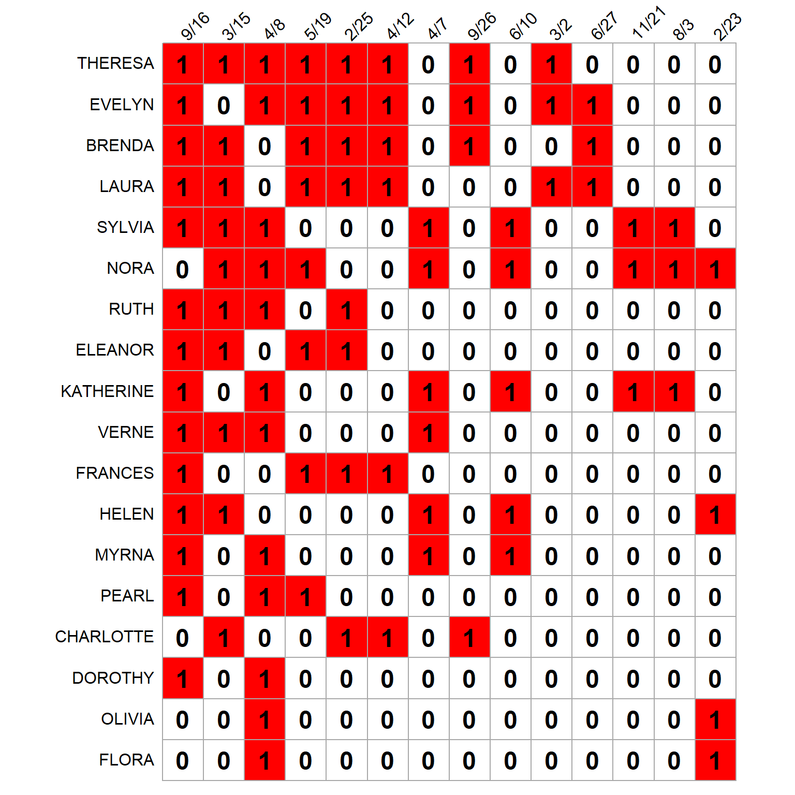
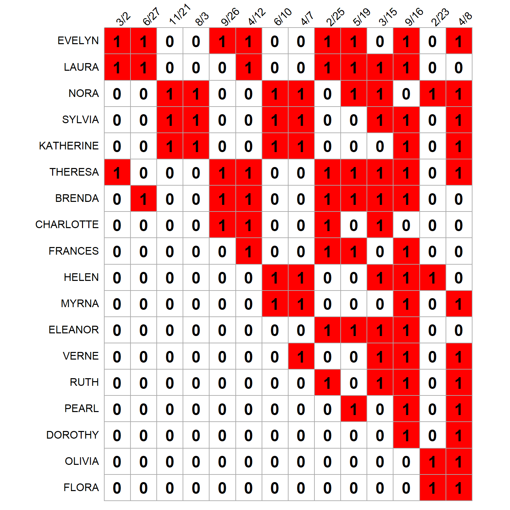
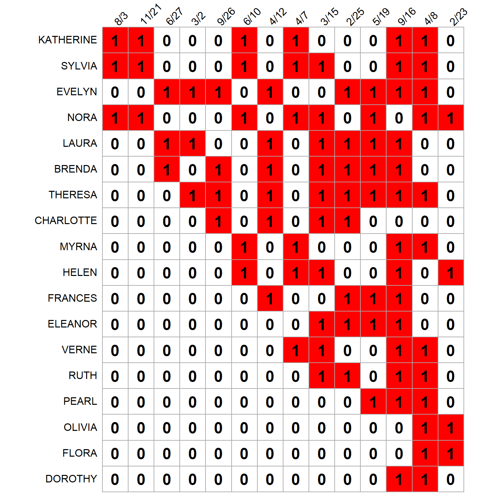

Fitness and Complexity in Two Mode Networks
In a highly cited piece, Tacchella et al. (2012) introduce a new prestige metric for two-mode networks that relies on the same “prismatic” model of status distribution we considered before.
Tacchella et al. (2012) called the prestige metrics they obtained using their approach “fitness” and “complexity” because they developed in the empirical context of calculating metrics for ranking nations based on their competitive advantage in exporting products, which means analyzing a two-mode country-by-product matrix (Hidalgo and Hausmann 2009).
However, when considered in the more general context of two-mode network link analysis (Fouss, Saerens, and Shimbo 2016), it is clear that their approach is a prestige metric for two-mode networks that combines ideas from Bonacich Eigenvector scoring and PageRank scoring that we covered in the two-mode prestige lecture notes.
Fitness/Complexity Scores
Their basic idea is that when we are (asymmetrically) interested in determining the status or prestige of nodes in one particular mode (e.g., the row-mode nodes), we should not use summaries (e.g., sums or averages) of the scores for nodes in the other (e.g., column) mode in determining their status. Instead, we should deeply discount those nodes that connect to low-status nodes in the other end.
To understand what they are getting at, it helps to write down the Bonacich prestige scoring in equation form, as we go through each iteration of the two-mode status distribution game:
If you remember from the function tm.status, each iteration \(q\), the vector of status scores for the row nodes \(\mathbf{s}^R\) and the column nodes \(\mathbf{s}^C\) is given by:
\[ s^R_i(q) = \sum_j\mathbf{A}_{ij}s^C_j(q-1) \tag{1}\]
\[ s^C_j(q) = \sum_i\mathbf{A}_{ij}s^R_i(q-1) \tag{2}\]
Where \(\mathbf{A}\) is the two-mode network’s biadjacency matrix, and with the restriction that at the initial step \(\mathbf{s}(0)^C = \mathbf{1}\) where \(\mathbf{1}\) is the all ones vector of length equals to the number of columns of the biadjacency matrix \(\mathbf{A}\).
At each iteration \(q > 0\) we normalize both score vectors:
\[ \mathbf{s}^R(q) = \frac{\mathbf{s}^R(q)}{\left\langle\mathbf{s}^R(q)\right\rangle} \tag{3}\]
\[ \mathbf{s}^C(q) = \frac{\mathbf{s}^C(q)}{\left\langle\mathbf{s}^C(q)\right\rangle} \tag{4}\]
Where \(\left\langle \mathbf{s} \right\rangle\) is the Euclidean vector norm, and the continue iterating until the differences between the vectors across successive iterations is minimal.
So far, this is what we covered before. What Tacchella et al. (2012) propose is to substitute Equation 2 above with:
\[ s^C_j(q) = \left[\sum_i\mathbf{A}_{ij}\left(s^R_i(q-1)\right)^{-1}\right]^{-1} \tag{5}\]
Which means that first (inner parentheses) we take the reciprocal of the row-mode nodes’ status scores, sum them across column-mode nodes (such that column-mode nodes that connect to low-status row-mode nodes get a big score), and then take the reciprocal of the reciprocal to get back to a measure of status for column-mode nodes. This non-linear transformation heavily discounts the status scores assigned to column-mode nodes whenever they connect to lower status row-mode nodes. Tacchella et al. (2012) also change the normalization step, using the mean value of the vector in denominator of Equation 3, and Equation 4.
Beyond Status as Popularity/Activity
How should we understand this modification? Recall that the basic principle of standard Bonacich prestige scoring is based on the equation of status/prestige and popularity/activity. In the canonical case of persons and groups (Breiger 1974), an event receives status from being attended by high-status individuals and an individual receives status from being affiliated with a high-status event; in each case, status from the point of view of the event means having highly active members, and from the point of view of the individual it means being affiliated with popular events.
But status may not always work this way. Consider the world-economic network linking countries to the products they have a competitive advantage in producing (Hidalgo and Hausmann 2009). Analysts noticed that the most developed countries produce both “complex” (i.e., high-status) products that only a select few of other highly developed economies produce (like semiconductors) and also less “complex” (i.e., low-status, like extractive natural resources) products that the other less developed economics produce (Tacchella et al. 2012).
That means that the “complexity” (i.e., status score) of a product cannot be derived simply taking a summary (e.g., sum or average) of the status score of the countries that produce it, because high-status countries engage in both high and low-status forms of production. However, knowing that a product is produced by a low-status country is more informative (and should weigh more significantly in the determination of a product’s status score) because low-status countries only produce low-status products.
Applying the same reasoning to the aforementioned case of persons and groups (Breiger 1974), an equivalent situation would go as follows. Imagine there is a set of prestigious women and a set of prestigious events that only the prestigious women attend. However, prestigious women are also endowed with a spirit of noblesse oblige, which means that the most prestigious of them also attend low-prestige events.
This means that when determining the prestige of the events it is not very informative to know that prestigious women affiliate with them; rather, we should weigh more heavily whether low-status women affiliate with an event in determining an event’s status, such that as the number of low-status women who affiliate with an event increases, a given event’s status is downgraded in a non-linear way which feeds back into the computation of each woman’s prestige.
Let’s see how this would work in the Southern Wome data. First, we load it up:
And here’s a function called tm.fitness that modifies the old two-mode status distribution game function we played before—which as you recall was itself based on Kleinberg’s (1999) HITS algorithm for directed one-mode networks—to compute the fitness and complexity prestige scores for persons and groups:
tm.fitness <- function(w, iter = 1000) {
y <- matrix(1, ncol(w), 1) #initial group status column vector set to a constant
z <- t(w)
k <- 0
while (k < iter) {
o.y <- y
x <- w %*% o.y #fitness status scores for people
x <- x/mean(x) #normalizing new people status scores
y <- (z %*% x^-1)^-1 #complexity status scores for groups
y <- y/mean(y) #normalizing new group status scores
k <- k + 1
}
return(list(p.s = x, g.s = y, k = k))
}Note that we move to a number of iterations approach to indicate convergence (governed by the iter argument) rather than a successive differences approach, due to the non-linear nature of the algorithm’s scoring.
We then apply the tm.fitness function to the SW data:
We also calculate the usual Bonacich eigenvector scores using the svd function for comparison purposes:
And we put them in a table:
Table 1: Status Scores
| Bonacich | Fitness | |
|---|---|---|
| EVELYN | 0.903 | 1.000 |
| LAURA | 0.834 | 0.842 |
| NORA | 0.712 | 0.781 |
| SYLVIA | 0.748 | 0.763 |
| KATHERINE | 0.594 | 0.746 |
| THERESA | 1.000 | 0.669 |
| BRENDA | 0.845 | 0.666 |
| CHARLOTTE | 0.454 | 0.294 |
| FRANCES | 0.564 | 0.126 |
| HELEN | 0.542 | 0.111 |
| MYRNA | 0.504 | 0.091 |
| ELEANOR | 0.616 | 0.066 |
| VERNE | 0.589 | 0.055 |
| RUTH | 0.637 | 0.050 |
| PEARL | 0.486 | 0.026 |
| DOROTHY | 0.355 | 0.007 |
| OLIVIA | 0.188 | 0.006 |
| FLORA | 0.188 | 0.006 |
| * Scores normalized by dividing by the maximum. |
| Bonacich | Complexity | |
|---|---|---|
| 3/2 | 0.297 | 1.000 |
| 6/27 | 0.280 | 0.998 |
| 11/21 | 0.223 | 0.937 |
| 8/3 | 0.223 | 0.937 |
| 9/26 | 0.347 | 0.498 |
| 4/12 | 0.499 | 0.223 |
| 6/10 | 0.336 | 0.154 |
| 4/7 | 0.400 | 0.088 |
| 2/25 | 0.635 | 0.071 |
| 5/19 | 0.647 | 0.054 |
| 3/15 | 0.757 | 0.051 |
| 9/16 | 1.000 | 0.014 |
| 2/23 | 0.177 | 0.011 |
| 4/8 | 0.749 | 0.006 |
| * Scores normalized by dividing by the maximum. |
Each table sorts persons and groups according to the fitness/complexity score. We can see that the status order changes once we introduce the fitness/complexity mode of scoring. While {Theresa} is the top person according to the usual dual Bonacich prestige score, once we heavily discount the status of events that include low-status people, {Evelyn} becomes the top person, with {Theresa} dropping to the sixth spot. In the same way while {Nora} is ranked sixth by the Bonacich prestige, her standing improves to third in the fitness scoring. Meanwhile {Brenda} was number three according to the Bonacich score, but her prestige drops to seventh place in the fitness/complexity scoring.
The status of groups changes even more dramatically once complexity is calculated by heavily discounting the status of groups that include lower status people. While {9/16} is the top event by the usual Bonacich prestige scoring, this event has minimal status according to the complexity scoring, ending up third from the bottom. Instead, the top even by complexity is {3/2} a relatively low-status event according to the Bonacich score. In fact, all of the other top events according to the complexity scoring, were ranked minimally by the Bonacich scoring, except for event {2/23}, which is a low-status event on both accountings. This means that the Bonacich prestige and complexity scores for events have a strong negative correlation (r = -0.63). This is different from the person ranks, which agree more closely (r = 0.77).
To help us make sense of the differences between the Bonacich and the fitness/complexity prestige scoring, Figure 1 (a) shows the original SW biadjacency matrix with rows and columns ordered by the degree of each node. This means that highly attended events appear in on the left, and highly active women appear on the top.
Figure 1 gives us some insight as to why event {9/16} drops so much in the fitness/complexity rankings. While it is the most prestigious (and well attended) event by the Bonacich score (leftmost in Figure 1 (a)), this also means that it is attended by a lot of low-status women (ones at the bottom of Figure 1 (b)). The same thing happens to event {4/8} which is third according to Bonacich prestige, but dead last according to complexity, given its heavy bulk of low fitness attendees (e.g., {Verne, Ruth, Pearl, Dorothy, Olivia, Flora}).
Event {3/2} on the other hand, while having relatively sparse attendance (only three women), and thus low Bonacich prestige (which rewards volume), has a membership composed of exclusively high-status persons (ones at the top of Figure 1 (b): {Evelyn, Laura, Theresa}). Event {2/23} gets ranked similarly by the two measures because it has both sparse attendance and the majority (two thirds) of its attendees are low-status women ({Olivia, Flora}).
Figure 1 also helps us make sense of the {Theresa} versus {Evelyn} contrasts across prestige rankings. Both are highly active women, but Evelyn’s membership in the top two events according to fitness/complexity {3/2, 6/27} puts her towards the top. The same goes for Laura’s membership in the same events, which move her from fourth to second in the fitness/complexity ranks. Nora’s membership in third and fourth most highly ranked events according to complexity, {11/21, 8/3}, also help her improve her fitness ranks in Figure 1 (b).
An Eigenvector-Based Approach
Sciarra et al. (2020, 8–9) describe an eigenvector-based (and thus linear and non-iterative) method to derive values that are close (but not exactly) as the fitness/complexity scores. Their idea is to produce a degree-normalized biadjacency matrix that equals:
\[ \tilde{\mathbf{A}} = \mathbf{D}_p \mathbf{A} \mathbf{D'}_g \]
Where \(\mathbf{D}_p\) is the diagonal matrix of people’s degrees and \(\mathbf{D'}_g\) is a diagonal matrix with each entry \(d'_{gg}\) in the diagonal equal to:
\[ d'_{gg} = \sum_g \frac{A_{pg}}{k_p} \]
Where \(k_p = \sum_p A_{pg}\) is the degree of each person.
In R we can obtain these matrices as follows:
Once we have the normalized biadjacency matrix, we compute the normalized Breiger projections:
\[ \tilde{\mathbf{P}} = \tilde{\mathbf{A}}\tilde{\mathbf{A}}^T \]
\[ \tilde{\mathbf{G}} = \tilde{\mathbf{A}}^T\tilde{\mathbf{A}} \]
The linear fitness/complexity scores \(\mathbf{x}\) and \(\mathbf{y}\) are then obtained as the solution to the following, now familiar, eigenvector problem:
\[ \lambda \mathbf{x} = \tilde{\mathbf{P}}\mathbf{x} \]
\[ \lambda \mathbf{y} = \tilde{\mathbf{G}}\mathbf{y} \]
Which in R we obtain as follows:
We can then compare the scores for both persons and groups, with the proviso that, to maximize the correlation with their linear approximations, we normalize the fitness scores for people by dividing by the person degrees \(k_p\), and the complexity scores for groups by multiplying by the corresponding \(d'_{gg}\) score.
We can see that they are pretty close:



Table 2: Status Scores
| Fitness | Linear Fitness | |
|---|---|---|
| EVELYN | 1.000 | 0.840 |
| KATHERINE | 0.994 | 1.000 |
| LAURA | 0.962 | 0.829 |
| SYLVIA | 0.872 | 0.897 |
| NORA | 0.781 | 0.836 |
| BRENDA | 0.762 | 0.690 |
| THERESA | 0.669 | 0.623 |
| CHARLOTTE | 0.589 | 0.584 |
| FRANCES | 0.253 | 0.362 |
| MYRNA | 0.183 | 0.384 |
| HELEN | 0.177 | 0.382 |
| ELEANOR | 0.132 | 0.275 |
| VERNE | 0.111 | 0.262 |
| RUTH | 0.099 | 0.216 |
| PEARL | 0.069 | 0.196 |
| DOROTHY | 0.028 | 0.122 |
| OLIVIA | 0.024 | 0.154 |
| FLORA | 0.024 | 0.154 |
| * Scores normalized by dividing by the maximum. |
| Complexity | Linear Complexity | |
|---|---|---|
| 6/27 | 1.000 | 0.853 |
| 11/21 | 0.993 | 1.000 |
| 8/3 | 0.993 | 1.000 |
| 3/2 | 0.958 | 0.834 |
| 9/26 | 0.781 | 0.724 |
| 4/12 | 0.564 | 0.669 |
| 6/10 | 0.332 | 0.704 |
| 2/25 | 0.266 | 0.538 |
| 4/7 | 0.243 | 0.611 |
| 3/15 | 0.232 | 0.544 |
| 5/19 | 0.197 | 0.531 |
| 9/16 | 0.104 | 0.442 |
| 4/8 | 0.051 | 0.359 |
| 2/23 | 0.035 | 0.275 |
| * Scores normalized by dividing by the maximum. |
Table 2 shows the linear fitness/complexity scores compared to the non-linear ones for persons and groups, and Figure 1 (c) shows the biadjacency matrix with rows and columns re-orodered according to the linearized fitness/complexity scores, which we can see is pretty close to the non-linear version in Figure 1 (b).